Solve Proportion and Similar Figure Applications
Solve Proportions
When two rational expressions are equal, the equation relating them is called a proportion.
The equation is a proportion because the two fractions are equal. The proportion is read “1 is to 2 as 4 is to 8.”
Proportions are used in many applications to ‘scale up’ quantities. We’ll start with a very simple example so you can see how proportions work. Even if you can figure out the answer to the example right away, make sure you also learn to solve it using proportions.
Suppose a school principal wants to have 1 teacher for 20 students. She could use proportions to find the number of teachers for 60 students. We let x be the number of teachers for 60 students and then set up the proportion:
We are careful to match the units of the numerators and the units of the denominators—teachers in the numerators, students in the denominators.
Since a proportion is an equation with rational expressions, we will solve proportions the same way we solved equations in Solve Rational Equations. We’ll multiply both sides of the equation by the LCD to clear the fractions and then solve the resulting equation.
So let’s finish solving the principal’s problem now. We will omit writing the units until the last step.
| Multiply both sides by the LCD, 60. | 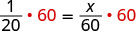 |
| Simplify. | |
| The principal needs 3 teachers for 60 students. |
Now we’ll do a few examples of solving numerical proportions without any units. Then we will solve applications using proportions.
Solve the proportion:
Solution
Solution
| To isolate , multiply both sides by the LCD, 63. | 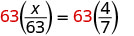 |
|
| Simplify. | 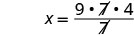 |
|
| Divide the common factors. | ||
| Check. To check our answer, we substitute into the original proportion. | ||
| Show common factors. | 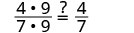 |
|
| Simplify. |
When we work with proportions, we exclude values that would make either denominator zero, just like we do for all rational expressions. What value(s) should be excluded for the proportion in the next example?
Solve the proportion:
Solution
Solution
| Multiply both sides by the LCD. | 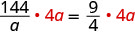 |
|
| Remove common factors on each side. | ||
| Simplify. | ||
| Divide both sides by 9. | ||
| Simplify. | ||
| Check. | ||
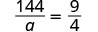 |
||
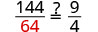 |
||
| Show common factors. | 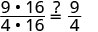 |
|
| Simplify. | 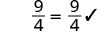 |
Solve the proportion:
Solution
Solution
| Multiply both sides by the LCD. | 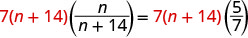 |
|
| Remove common factors on each side. | ||
| Simplify. | ||
| Solve for . | ||
| Check. | ||
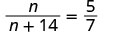 |
||
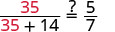 |
||
| Simplify. | 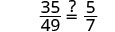 |
|
| Show common factors. | 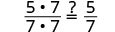 |
|
| Simplify. | 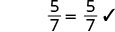 |
Solve:
Solution
Solution
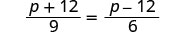 |
||
| Multiply both sides by the LCD, 18. | 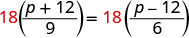 |
|
| Simplify. | ||
| Distribute. | ||
| Solve for . | ||
| Check. | ||
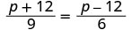 |
||
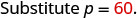 |
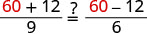 |
|
| Simplify. | ||
| Divide. |
To solve applications with proportions, we will follow our usual strategy for solving applications. But when we set up the proportion, we must make sure to have the units correct—the units in the numerators must match and the units in the denominators must match.
When pediatricians prescribe acetaminophen to children, they prescribe 5 milliliters (ml) of acetaminophen for every 25 pounds of the child’s weight. If Zoe weighs 80 pounds, how many milliliters of acetaminophen will her doctor prescribe?
Solution
Solution
| Identify what we are asked to find, and choose a variable to represent it. | How many ml of acetaminophen will the doctor prescribe? | |
| Let of acetaminophen. | ||
| Write a sentence that gives the information to find it. | If 5 ml is prescribed for every 25 pounds, how much will be prescribed for 80 pounds? | |
| Translate into a proportion–be careful of the units. |
|
|
| Multiply both sides by the LCD, 400. | 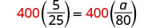 |
|
| Remove common factors on each side. | 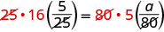 |
|
| Simplify, but don't multiply on the left. Notice what the next step will be. | ||
| Solve for . | ||
| Check. | ||
| Is the answer reasonable? | ||
| Yes, since 80 is about 3 times 25, the medicine should be about 3 times 5. So 16 ml makes sense. | ||
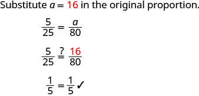 |
||
| Write a complete sentence. | The pediatrician would prescribe 16 ml of acetaminophen to Zoe. |
A 16-ounce iced caramel macchiato has 230 calories. How many calories are there in a 24-ounce iced caramel macchiato?
Solution
Solution
| Identify what we are asked to find, and choose a variable to represent it. | How many calories are in a 24 ounce iced caramel macchiato? | |
| Let in 24 ounces. | ||
| Write a sentence that gives the information to find it. | If there are 230 calories in 16 ounces, then how many calories are in 24 ounces? | |
| Translate into a proportion–be careful of the units. |
|
|
| Multiply both sides by the LCD, 48. | 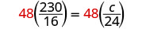 |
|
| Remove common factors on each side. | 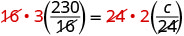 |
|
| Simplify. | ||
| Solve for . | ||
| Check. | ||
| Is the answer reasonable? | ||
| Yes, 345 calories for 24 ounces is more than 290 calories for 16 ounces, but not too much more. | ||
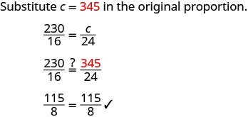 |
||
| Write a complete sentence. | There are 345 calories in a 24-ounce iced caramel macchiato. |
Josiah went to Mexico for spring break and changed $325 dollars into Mexican pesos. At that time, the exchange rate had $1 US is equal to 12.54 Mexican pesos. How many Mexican pesos did he get for his trip?
Solution
Solution
| What are you asked to find? | How many Mexican pesos did Josiah get? | |
| Assign a variable. | Let | |
| Write a sentence that gives the information to find it. | If $1 US is equal to 12.54 Mexican pesos, then $325 is how many pesos? | |
| Translate into a proportion–be careful of the units. | ||
| Multiply both sides by the LCD, . | 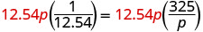 |
|
| Remove common factors on each side. | 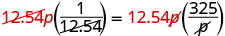 |
|
| Simplify. | ||
| Check. | ||
| Is the answer reasonable? | ||
| Yes, $100 would be 1,254 pesos. $325 is a little more than 3 times this amount, so our answer of 4075.5 pesos makes sense. | ||
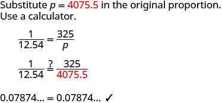 |
||
| Write a complete sentence. | Josiah got 4075.5 pesos for his spring break trip. |
In the example above, we related the number of pesos to the number of dollars by using a proportion. We could say the number of pesos is proportional to the number of dollars. If two quantities are related by a proportion, we say that they are proportional.
Solve Similar Figure Applications
When you shrink or enlarge a photo on a phone or tablet, figure out a distance on a map, or use a pattern to build a bookcase or sew a dress, you are working with similar figures. If two figures have exactly the same shape, but different sizes, they are said to be similar. One is a scale model of the other. All their corresponding angles have the same measures and their corresponding sides are in the same ratio.
For example, the two triangles in Figure 1 are similar. Each side of is 4 times the length of the corresponding side of .
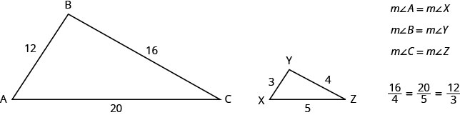
This is summed up in the Property of Similar Triangles.
To solve applications with similar figures we will follow the Problem-Solving Strategy for Geometry Applications we used earlier.
is similar to . The lengths of two sides of each triangle are given. Find the lengths of the third sides.
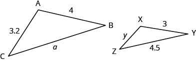
Solution
Solution
| Step 1. Read the problem. Draw the figure and label it with the given information. | Figure is given. |
| Step 2. Identify what we are looking for. | the length of the sides of similar triangles |
| Step 3. Name the variables. | Let length of the third side of length of the third side of |
| Step 4. Translate. | Since the triangles are similar, the corresponding sides are proportional. |
| We need to write an equation that compares the side we are looking for to a known ratio. Since the side AB = 4 corresponds to the side XY = 3 we know . So we write equations with to find the sides we are looking for. Be careful to match up corresponding sides correctly. |
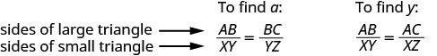 |
| Substitute. |
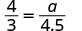 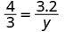 |
| Step 5. Solve the equation. |
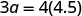 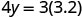 |
|
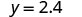 |
|
|
Step 6. Check. |
|
| Step 7. Answer the question. | The third side of is 6 and the third side of is 2.4. |
The next example shows how similar triangles are used with maps.
On a map, San Francisco, Las Vegas, and Los Angeles form a triangle whose sides are shown in the figure below. If the actual distance from Los Angeles to Las Vegas is 270 miles find the distance from Los Angeles to San Francisco.
![The above image shows two similar triangles and how they are used with maps. The smaller triangle on the left shows San Francisco, Las Vegas and Los Angeles on the three points. San Francisco to Los Angeles is 1.3 inches. Los Angeles to Las Vegas is 1 inch. Las Vegas to San Francisco is 2.1 inches. The second larger triangle shows the same points. The distance from San Francisco to Los Angeles is x. The distance from Los Angeles to Las Vegas is 270 miles. The distance from Las Vegas to San Francisco is not noted.](../../media/CNX_ElemAlg_Figure_08_07_023_img_new.jpg)
Solution
Solution
| Read the problem. Draw the figures and label with the given information. | The figures are shown above. |
| Identify what we are looking for. | The actual distance from Los Angeles to San Francisco. |
| Name the variables. | Let distance from Los Angeles to San Francisco. |
|
Translate into an equation. Since the triangles are similar, the corresponding sides are proportional. We'll make the numerators "miles" and the denominators "inches." |
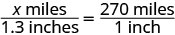 |
| Solve the equation. | 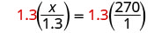 |
| Check. | |
| On the map, the distance from Los Angeles to San Francisco is more than the distance from Los Angeles to Las Vegas. Since 351 is more than 270 the answer makes sense. |
|
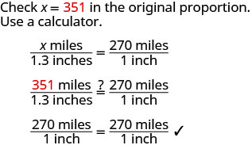 |
|
| Answer the question. | The distance from Los Angeles to San Francisco is 351 miles. |
We can use similar figures to find heights that we cannot directly measure.
Tyler is 6 feet tall. Late one afternoon, his shadow was 8 feet long. At the same time, the shadow of a tree was 24 feet long. Find the height of the tree.
Solution
Solution
| Read the problem and draw a figure. | 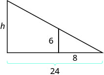 |
| We are looking for h, the height of the tree. | |
| We will use similar triangles to write an equation. | |
| The small triangle is similar to the large triangle. | |
| Solve the proportion. | |
| Simplify. | |
| Check. | |
| Tyler's height is less than his shadow's length so it makes sense that the tree's height is less than the length of its shadow. |
|
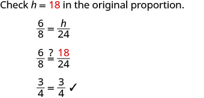 |
Key Concepts
-
Property of Similar Triangles
- If is similar to , then their corresponding angle measures are equal and their corresponding sides are in the same ratio.
-
Problem Solving Strategy for Geometry Applications
- Read the problem and make sure all the words and ideas are understood. Draw the figure and label it with the given information.
- Identify what we are looking for.
- Name what we are looking for by choosing a variable to represent it.
- Translate into an equation by writing the appropriate formula or model for the situation. Substitute in the given information.
- Solve the equation using good algebra techniques.
- Check the answer in the problem and make sure it makes sense.
- Answer the question with a complete sentence.
Practice Makes Perfect
Solve Proportions
In the following exercises, solve.
Solution
Solution
Solution
Solution
Solution
Solution
Solution
Solution
Solution
Solution
Pediatricians prescribe 5 milliliters (ml) of acetaminophen for every 25 pounds of a child’s weight. How many milliliters of acetaminophen will the doctor prescribe for Jocelyn, who weighs 45 pounds?
Solution
Brianna, who weighs 6 kg, just received her shots and needs a pain killer. The pain killer is prescribed for children at 15 milligrams (mg) for every 1 kilogram (kg) of the child’s weight. How many milligrams will the doctor prescribe?
A veterinarian prescribed Sunny, a 65 pound dog, an antibacterial medicine in case an infection emerges after her teeth were cleaned. If the dosage is 5 mg for every pound, how much medicine was Sunny given?
Solution
Belle, a 13 pound cat, is suffering from joint pain. How much medicine should the veterinarian prescribe if the dosage is 1.8 mg per pound?
A new energy drink advertises 106 calories for 8 ounces. How many calories are in 12 ounces of the drink?
Solution
One 12 ounce can of soda has 150 calories. If Josiah drinks the big 32 ounce size from the local mini-mart, how many calories does he get?
A new 7 ounce lemon ice drink is advertised for having only 140 calories. How many ounces could Sally drink if she wanted to drink just 100 calories?
Solution
Reese loves to drink healthy green smoothies. A 16 ounce serving of smoothie has 170 calories. Reese drinks 24 ounces of these smoothies in one day. How many calories of smoothie is he consuming in one day?
Janice is traveling to Canada and will change $250 US dollars into Canadian dollars. At the current exchange rate, $1 US is equal to $1.01 Canadian. How many Canadian dollars will she get for her trip?
Solution
Todd is traveling to Mexico and needs to exchange $450 into Mexican pesos. If each dollar is worth 12.29 pesos, how many pesos will he get for his trip?
Steve changed $600 into 480 Euros. How many Euros did he receive for each US dollar?
Solution
Martha changed $350 US into 385 Australian dollars. How many Australian dollars did she receive for each US dollar?
When traveling to Great Britain, Bethany exchanged her $900 into 570 British pounds. How many pounds did she receive for each American dollar?
Solution
A missionary commissioned to South Africa had to exchange his $500 for the South African Rand which is worth 12.63 for every dollar. How many Rand did he have after the exchange?
Ronald needs a morning breakfast drink that will give him at least 390 calories. Orange juice has 130 calories in one cup. How many cups does he need to drink to reach his calorie goal?
Solution
Sarah drinks a 32-ounce energy drink containing 80 calories per 12 ounce. How many calories did she drink?
Elizabeth is returning to the United States from Canada. She changes the remaining 300 Canadian dollars she has to $230.05 in American dollars. What was $1 worth in Canadian dollars?
Solution
Ben needs to convert $1000 to the Japanese Yen. One American dollar is worth 123.3 Yen. How much Yen will he have?
A golden retriever weighing 85 pounds has diarrhea. His medicine is prescribed as 1 teaspoon per 5 pounds. How much medicine should he be given?
Solution
Five-year-old Lacy was stung by a bee. The dosage for the anti-itch liquid is 150 mg for her weight of 40 pounds. What is the dosage per pound?
Karen eats cup of oatmeal that counts for 2 points on her weight loss program. Her husband, Joe, can have 3 points of oatmeal for breakfast. How much oatmeal can he have?
Solution
cup
An oatmeal cookie recipe calls for cup of butter to make 4 dozen cookies. Hilda needs to make 10 dozen cookies for the bake sale. How many cups of butter will she need?
Solve Similar Figure Applications
In the following exercises, is similar to . Find the length of the indicated side.
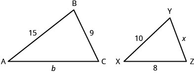
side b
Solution
side x
In the following exercises, is similar to .
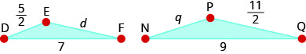
Find the length of side d.
Solution
Find the length of side q.
In the following two exercises, use the map shown. On the map, New York City, Chicago, and Memphis form a triangle whose sides are shown in the figure below. The actual distance from New York to Chicago is 800 miles.
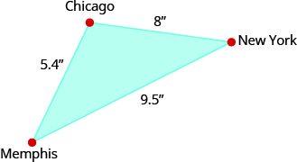
Find the actual distance from New York to Memphis.
Solution
950 miles
Find the actual distance from Chicago to Memphis.
In the following two exercises, use the map shown. On the map, Atlanta, Miami, and New Orleans form a triangle whose sides are shown in the figure below. The actual distance from Atlanta to New Orleans is 420 miles.
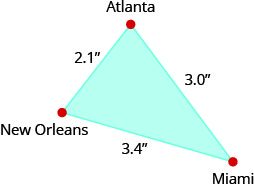
Find the actual distance from New Orleans to Miami.
Solution
680 miles
Find the actual distance from Atlanta to Miami.
A 2 foot tall dog casts a 3 foot shadow at the same time a cat casts a one foot shadow. How tall is the cat?
Solution
foot
Larry and Tom were standing next to each other in the backyard when Tom challenged Larry to guess how tall he was. Larry knew his own height is 6.5 feet and when they measured their shadows, Larry’s shadow was 8 feet and Tom’s was 7.75 feet long. What is Tom’s height?
The tower portion of a windmill is 212 feet tall. A six foot tall person standing next to the tower casts a seven foot shadow. How long is the windmill’s shadow?
Solution
The height of the Statue of Liberty is 305 feet. Nicole, who is standing next to the statue, casts a 6 foot shadow and she is 5 feet tall. How long should the shadow of the statue be?
Everyday Math
Heart Rate At the gym, Carol takes her pulse for 10 seconds and counts 19 beats.
- ⓐ How many beats per minute is this?
- ⓑ Has Carol met her target heart rate of 140 beats per minute?
Solution
114 beats per minute
no
Heart Rate Kevin wants to keep his heart rate at 160 beats per minute while training. During his workout he counts 27 beats in 10 seconds.
- ⓐ How many beats per minute is this?
- ⓑ Has Kevin met his target heart rate?
Cost of a Road Trip Jesse’s car gets 30 miles per gallon of gas.
- ⓐ If Las Vegas is 285 miles away, how many gallons of gas are needed to get there and then home?
- ⓑ If gas is $3.09 per gallon, what is the total cost of the gas for the trip?
Solution
19 gallons
$58.71
Cost of a Road Trip Danny wants to drive to Phoenix to see his grandfather. Phoenix is 370 miles from Danny’s home and his car gets 18.5 miles per gallon.
- ⓐ How many gallons of gas will Danny need to get to and from Phoenix?
- ⓑ If gas is $3.19 per gallon, what is the total cost for the gas to drive to see his grandfather?
Lawn Fertilizer Phil wants to fertilize his lawn. Each bag of fertilizer covers about 4,000 square feet of lawn. Phil’s lawn is approximately 13,500 square feet. How many bags of fertilizer will he have to buy?
Solution
4 bags
House Paint April wants to paint the exterior of her house. One gallon of paint covers about 350 square feet, and the exterior of the house measures approximately 2000 square feet. How many gallons of paint will she have to buy?
Cooking Natalia’s pasta recipe calls for 2 pounds of pasta for 1 quart of sauce. How many pounds of pasta should Natalia cook if she has 2.5 quarts of sauce?
Solution
5 pounds
Heating Oil A 275 gallon oil tank costs $400 to fill. How much would it cost to fill a 180 gallon oil tank?
Writing Exercises
Marisol solves the proportion by ‘cross multiplying’, so her first step looks like Explain how this differs from the method of solution shown in Example 2.
Solution
Answers will vary.
Find a printed map and then write and solve an application problem similar to Example 9.
Self Check
ⓐ After completing the exercises, use this checklist to evaluate your mastery of the objectives of this section.
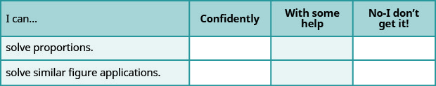
ⓑ What does this checklist tell you about your mastery of this section? What steps will you take to improve?